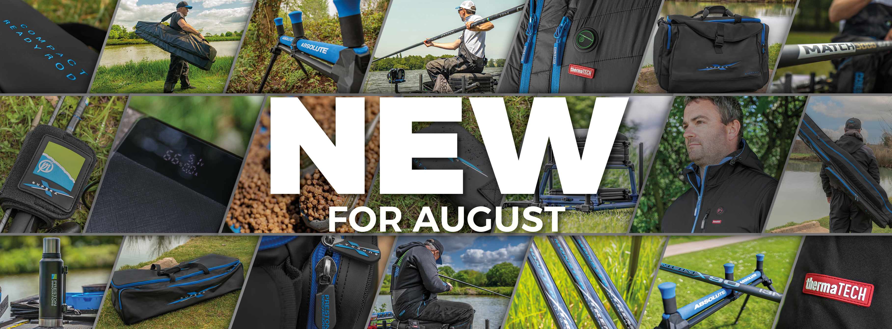
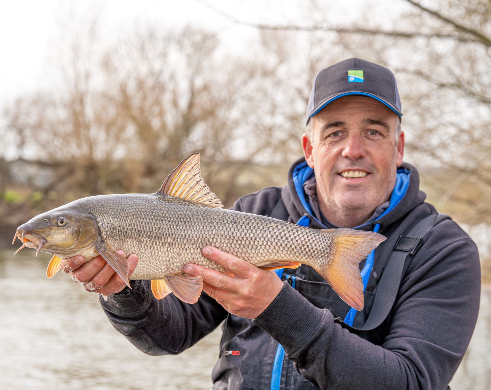

test commit two
PRESTON INNOVATIONS NUMBER 1 IN MATCH FISHING Welcome to the website for all match fishing anglers Aimed at the serious match angler, Preston Innovations offer a wide range of products that suit many different styles of fishing. From the casual angler right through to professional match winners we cover something for every angler in our diverse and vast range of quality products. We have one of the strongest and most formidable team of anglers, the likes of Des Shipp, Lee Kerry, Neil McKinnon, and Andy Findlay are all regular faces in our product development meetings, so it’s no wonder our product range is so impressive and extensive. The invaluable input from these match winning professionals helps us produce innovative and cutting-edge products that are not only practical, but really give anglers an edge - especially in match fishing situations. 